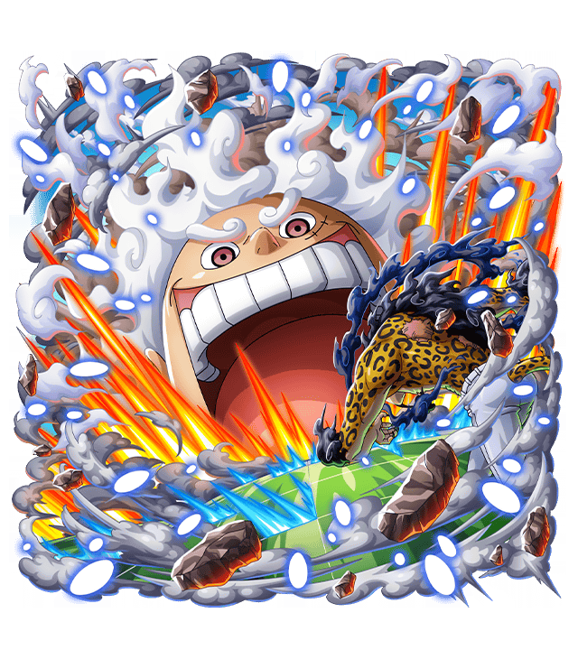
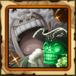
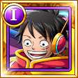

★
★
★
★
★
+
- Personnages soutenus : Personnages de type DEX
- Level 5: Statistiques de base du personnage soutenu augmentées a hauteur de 10% des statistiques du personnages
Monkey D. Luffy
Guerrier blanc se déchaînant
Classe du personnage :
Tenace & Sabreur
Statistiques
| LEVELS | HP | ATK | RCV |
|---|---|---|---|
| 1 | 1,565 | 756 | 174 |
| 99 | 3,030 | 1,482 | 336 |
| 150 | 4,545 | 2,223 | 504 |
Capacité de Capitaine
- Réduit le temps de chargement des coups spéciaux de l'équipe de 1 tour au début de la quête, Reduit le temps de chargement du coup spécial du bateau de 3 tour au début de la quête, ATK et HP x1.3 pour les personnages de type INT et DEX et rend les cercles RCV et TND avantageux pour ces personnages
Capacité de Crewmate
- RESISTANCE Immunise le personnage de l'evanouissement
- STATS + Stats de base pour les personnages de type INT et DEX + 60
Spécial
- Réduit les HP de tous les ennemis de 20%, annule l'évanouissement subi par l'équipe, réduit la durée des réduction d'ATK subies par l'équipe de 6 tour, si des effets d'augmentation d'ATK et des augmentations des effets de cercles sont simultanément actifs sur l'équipe lorsque le coup spécial est lancé, Hausse du multiplicateur de combo des ATK normal des personnages des types INT et DEX (Jusqu'a +0.6 pendant 1 tour
SuperType
- Effets de type des ATK normales des personnages des types INT et DEX x2.25 pendant 2 tour, ATK et effets de cercles pour ces personnages x 1.25 pendant 2 tour (cet effet changera de valeur si d'autre augmentation d'ATK ou effets de cercles sont appliqués), Et renforce les personnages de type DEX en les transformant en personnages de SUPER TYPE DEX
Évolution

→

CAPACITÉS PVP
Coup spécial PVP
Augmente l'ATK des alliés de type DEX lvl.4(15s), Inflige a un ennemi des dégâts équivalent a 2x l'ATK , Restaure 15% des HP du personnage
CoolDown 20s
Capacité de la fête des pirates
Augmente l'ATK des alliés de type DEX Lv.5, Augmente la DEF Lv.3, Lorsque des dégâts sont subis, Augmente l'ATK du personnage jusqu'à 5 fois Lv.1, Augmente la vitesse Lv.1
Actions principales
→ ATK normal
→ ATK renforcée
→ ATK à pleine puissance
Cibles des actions
Vis les ennemis proches
Résistance
80 % de chances d'éviter "Liens des actions", réduit les dégâts reçus de personnages de type QCK de 20 %